Every state from spec section 5 in the game's own UI kit, drawn over the real match capture where it matters. Nothing is in Studio yet; it gets imported only after you say yes. Numbers on screen are the ones the server uses (EggConfig).
Built · 17 Oct, ~20:30Z · in Studio, not saved
The back shard and the start-of-match intro are in the game
After your approval: every Runner (bots too) now carries the 3D shard on their back instead of the egg. It recolours on each step, with its light in the new colour; it goes when they're caught, and Catchers never carry one. The HUD card reads YOUR SHARD with the shard icon, and the results egg box reads RARE SHARD. At the start of a match, inside the existing 5 s role reveal (the match flow is unchanged), the egg floats up, cracks softly and its shards arc to every Runner's back, through the shared comfort camera. Reduce effects skips the camera and the flying shards. It can be switched off (EggConfig.SHARD_INTRO_ENABLED).
Checked in a live playtest (bot match)Every Runner wore a Common shard at the role reveal (20 in the match), with the egg hidden. The intro ran on time: the egg floated at 0.4 s, cracked at about 1.75 s, 20 shard copies flew from 1.8 to 2.8 s, your own back shard appeared as its copy landed, and the camera was back at 3.5 s, before the crossing starts at 5 s. Steps rebuilt the shard as Rare, Epic and Legendary with the matching light; caught means no shard; the 3 Catchers had none. The four Runner HUD looks read YOUR SHARD with the right shard icon; on an iPhone 14 screen the card stays compact under the top bar. Screen capture fails on this PC during playtests, so there's no clip; the shard stills above show the same model and placement.
Still says "egg"The match feed ("is safe with a Rare egg", "stole X's Common egg") and the SAFE banner live in UIController, a shared script. They change to "shard" once you OK that edit.
Phone fixes · 17 Oct, ~20:15Z · in Studio, not saved
The HUD card and the results shard line on phones
HUD card: on phones the card hid its small lines but kept its desktop height, which left the empty dark half you saw. Now its plate hugs the egg, the rarity word and the meter, and it stays below Roblox's top-left buttons. Checked live at 844 x 390 (iPhone 14 simulator): the plate hugged its content and sat below the 58 px top bar. An extra 0.82 shrink made the word 12 px and the meter 5 px, so that is off: the card is now about 122 x 48 px on that screen.
Results: on a narrow egg box the shard line is "+1 FILL" with one rarity word beside it, and the small egg's label never wraps. "0 / 18" lost its "FILL" because the text wrapped onto a hidden second line. Checked live: "+1 FILL", "RARE" and "1 / 18 FILL" all on one line each, the label inside the card.
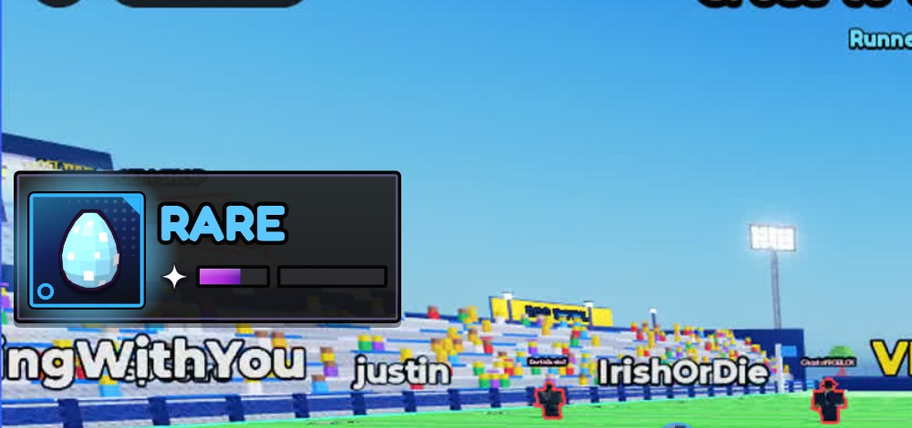
Phone HUD card (mockup of the implemented layout, at phone scale): RARE and the two-part meter, no dead space, under the top-left buttons.
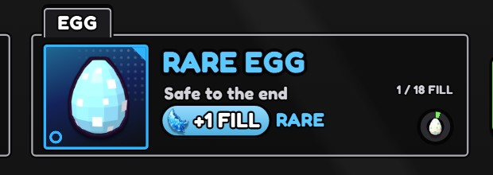
Phone results egg box: RARE EGG, +1 FILL with RARE beside it, 1 / 18 FILL above the small egg.
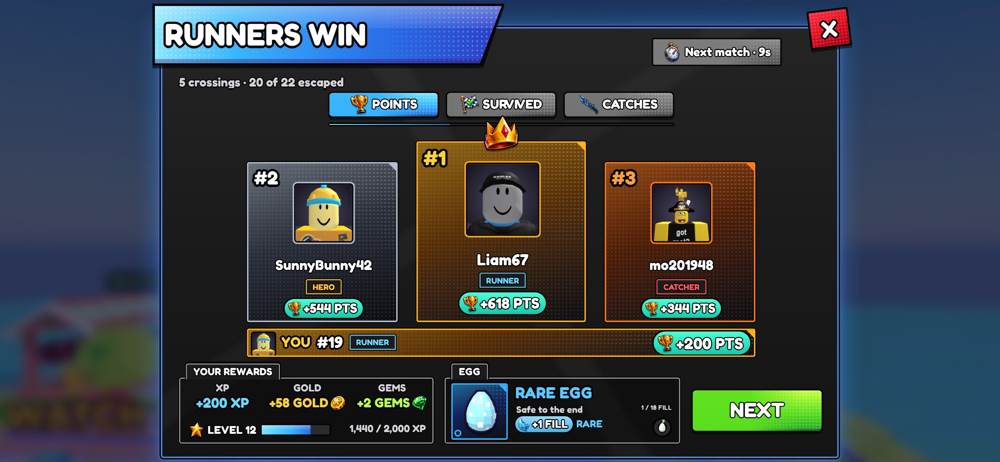
The whole results screen at phone size.
NoteThe phone stills are renders of the implemented layout. Studio's screen capture fails on this PC while the phone simulator is on; the live checks above were read from the running game (sizes and text).
For approval · 17 Oct, ~20:05Z · 3D model, not wired into the game yet
The back shard as a real 3D piece of eggshell
As you asked: a physical shard welded to the back, not a flat picture. It's one curved, faceted piece of eggshell with a jagged broken edge (512 triangles), built in code like the pets, with a painted texture through SurfaceAppearance and no Neon. The same mesh is recoloured per rarity: Common green and white, Rare blue, Epic purple, Legendary gold. A soft PointLight in its rarity colour gives the glow (it shows in darker scenes; these stills are in daylight). It's sized to read at match-camera distance without hiding the avatar.
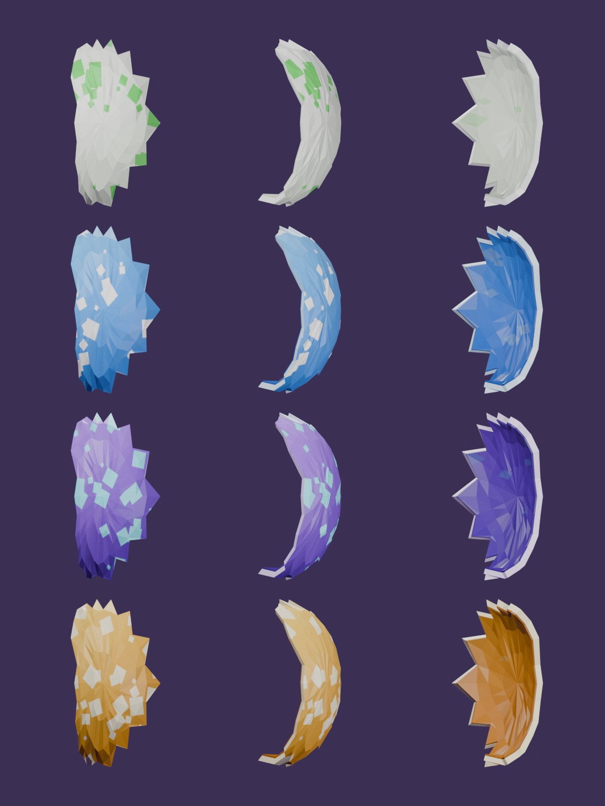
Turntable: Common, Rare, Epic, Legendary (rows), each from the front, the side and the inside.
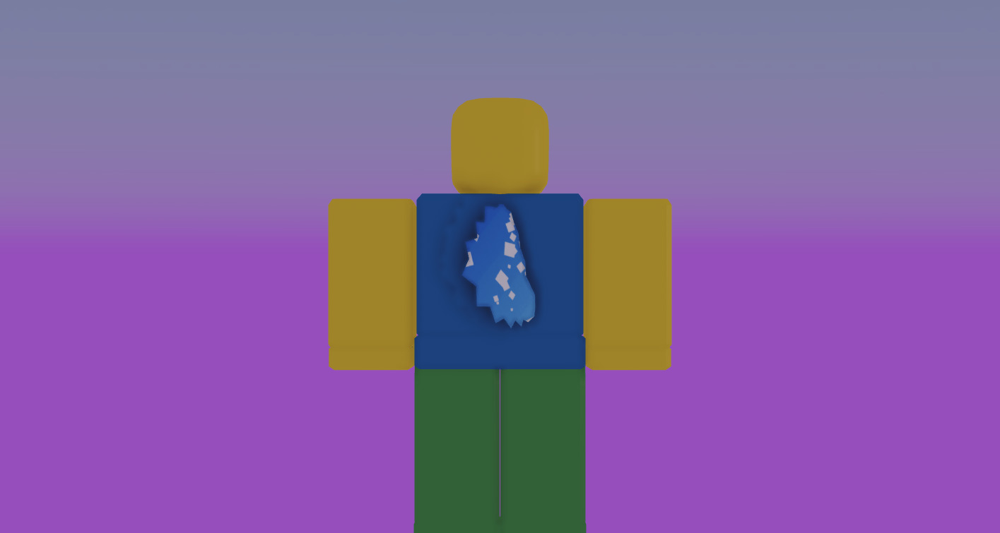
Checked from directly behind (narrow lens, no perspective): centred on the spine between the shoulder blades, inside the torso outline. Weld offset CFrame(-0.06, -0.02, back) with a 12 degree tilt.
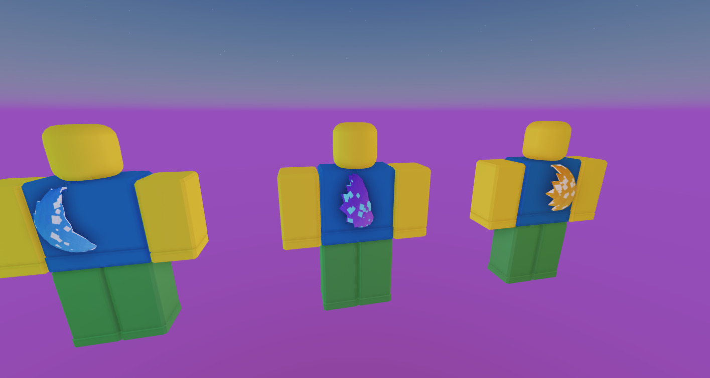
Re-shot after your review: centred between the shoulder blades, convex side out, a slight tilt, 1.45 studs tall so it stays inside the torso outline from behind (measured: 0.53 of the torso's 0.97 half-width, 0.84 of its 0.85 half-height).
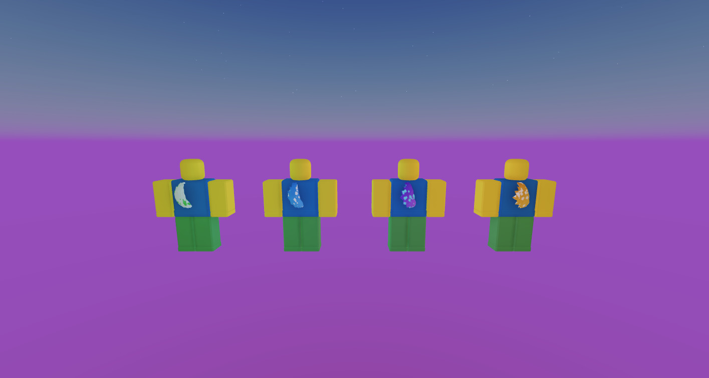
From further back: Common, Rare, Epic, Legendary, each centred on the back.
Your callApprove this shard (shape, colours, size on the back) or say what to change. The back egg and the match-start intro stay as they are until you approve.
Live · 17 Oct, ~19:50Z
The two-mark meter in a real match
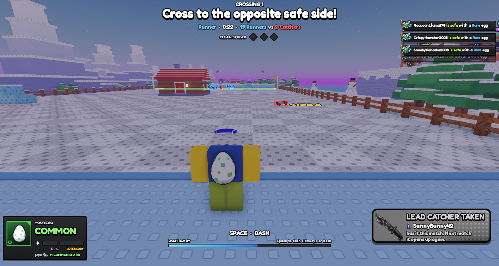
Captured in a live playtest: the card's meter now has the EPIC and LEGENDARY marks (the egg on the back is still today's egg model).
For approval · 17 Oct, ~19:35Z · mockups only
The match starts with an egg that breaks into shards
About 3 seconds at match start. An egg floats over the start line, cracks, and breaks into shards that arc onto every Runner's back. Each Runner then carries a chunky glowing shard in its rarity colour (it recolours when it steps up), and a Catcher snatches the shard. The HUD card becomes a shard card with the two-mark meter. The camera is slow and eased, through the shared comfort Cinematic module: no shake, no flash. With Reduce effects on, the camera doesn't move and the shards just appear. A switch in GameConfig (SHARD_INTRO_ENABLED) turns it off. The break uses the AllVFX textures already uploaded.
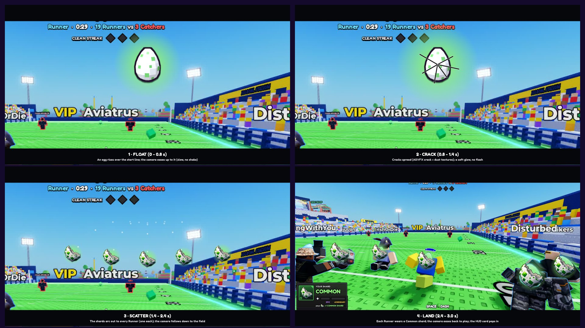
1 Float (0 to 0.8 s), 2 Crack (0.8 to 1.4 s), 3 Scatter (1.4 to 2.4 s), 4 Land (2.4 to 3.0 s): Common shards on every Runner, the HUD card pops in.
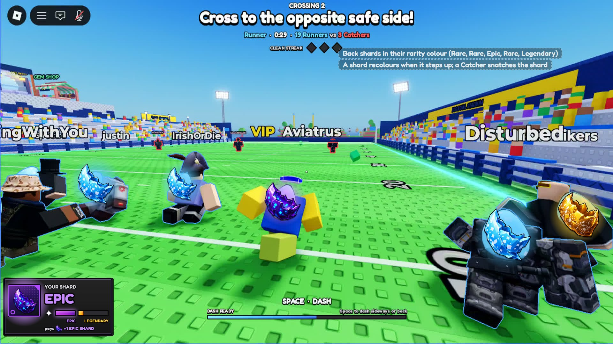
Mid-match: back shards in their rarity colour (Rare, Rare, Epic, Rare, Legendary), drawn over a real capture. In the game they are a 3D shard model with a soft glow.
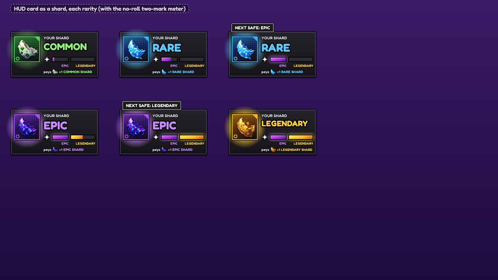
The HUD card as a shard, Common to Legendary, with NEXT SAFE tags at the marks.
Your callApprove the intro, the shard on the back and the shard card, or say what to change. Nothing is built until you do.
No roll · 17 Oct, ~19:20Z · mockup, ready to import
One meter, two marks, no random chance
Your call: "remove the roll, keep it performance based". The HUD meter now has two parts: up to the EPIC mark (2.0) and up to the LEGENDARY mark (5.0). Once the meter passes a mark, a tag says what the next safe gives ("NEXT SAFE: EPIC"), and that safe steps the shard up once. The meter never empties; it keeps filling toward LEGENDARY. The upgrade banner reads "SHARD UPGRADED: EPIC" and waits until the results screen has opened. The logic is written and tested (66/66 unit tests). It goes into the game once the shared-script edit is allowed on the PC.
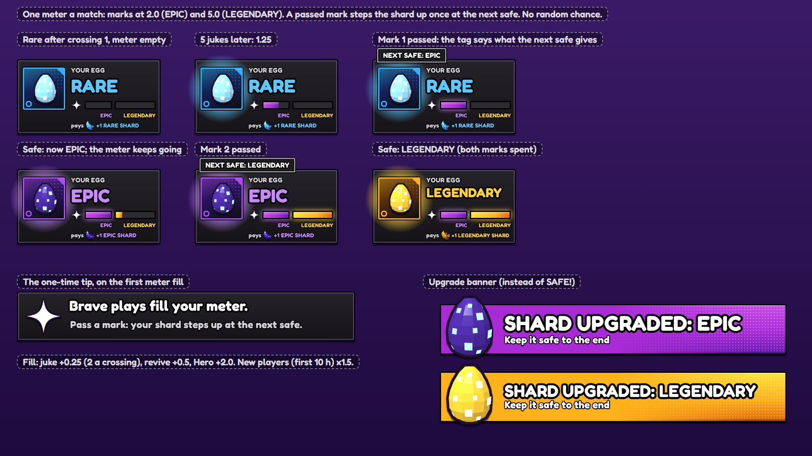
A match left to right: Rare with an empty meter; 1.25; EPIC mark passed (NEXT SAFE: EPIC); safe, now Epic, the meter keeps going; LEGENDARY mark passed; safe, Legendary. Bottom: the one-time tip and the two banners.
Fixes · 17 Oct, ~19:00Z · mockups, now being imported
Fill only, a bigger Lucky strip, and the hatch boost ladder
Your fixes, before import. Progress is in FILL only, never percent: "27 / 36 FILL", ring marks HATCH (18) and MAX (36), "Odds at 27 fill". The Get Lucky Egg strip is bigger so it reads on a phone. The boost button sits beside HATCH: x2 ODDS, then UPGRADE TO x3, then UPGRADE TO x4, then x4 MAXED (greyed). A small "x2 BOOST" tag sits on the odds header beside LUCKY. The odds shown are what the hatch rolls, with the pass, the boost and the 20% Legendary cap applied. Robux prices are placeholders (49 / 50 / 50): the button shows each product's real price once you create them. With no product ids set, the boost button stays hidden.
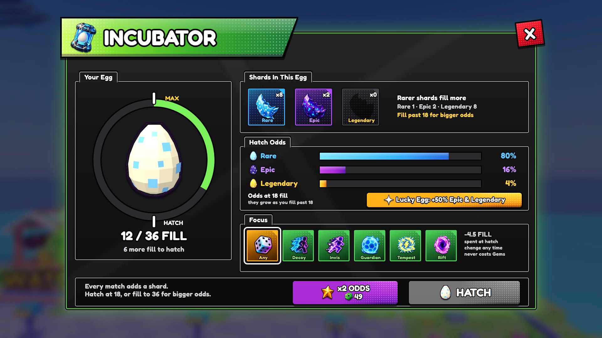
Still filling: 12 / 36 FILL, 6 more to hatch, x2 ODDS with its price, the bigger Get Lucky Egg strip.
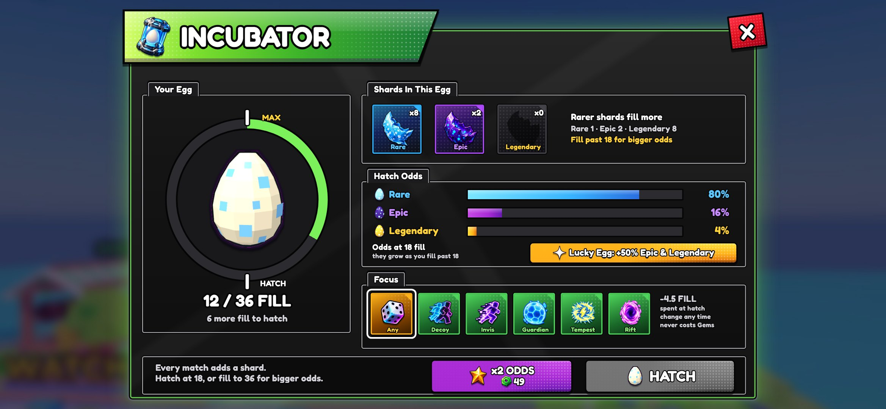
Phone size (844 x 390).
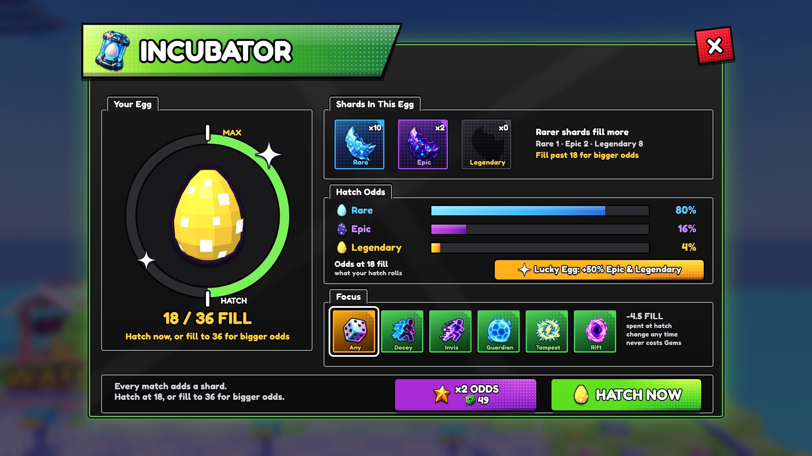
18 / 36 FILL: HATCH NOW, no boost bought, so x2 ODDS.
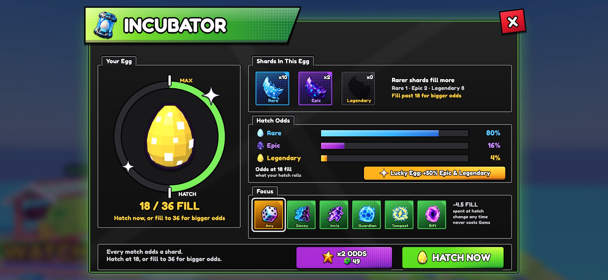
Phone size (844 x 390).
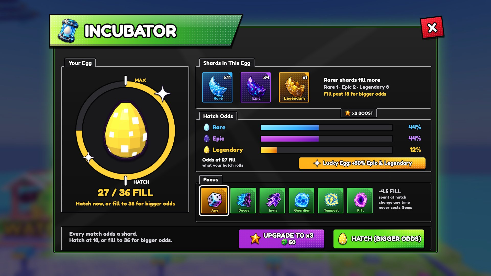
27 / 36 FILL with x2 bought: UPGRADE TO x3, and the x2 BOOST tag. Odds 44 / 44 / 12.
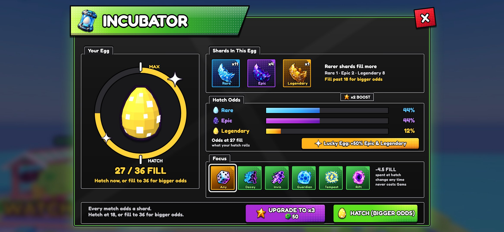
Phone size (844 x 390).
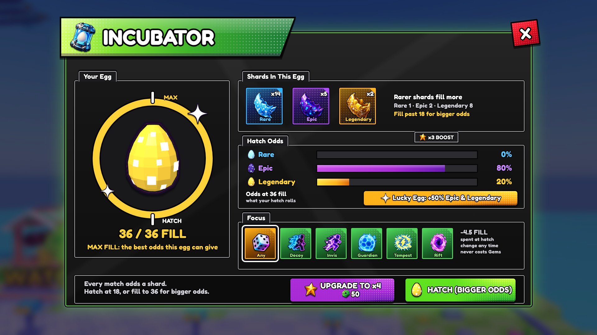
36 / 36 FILL (MAX) with x3 bought: UPGRADE TO x4. Rare reaches 0% here, and Legendary sits at the 20% cap.
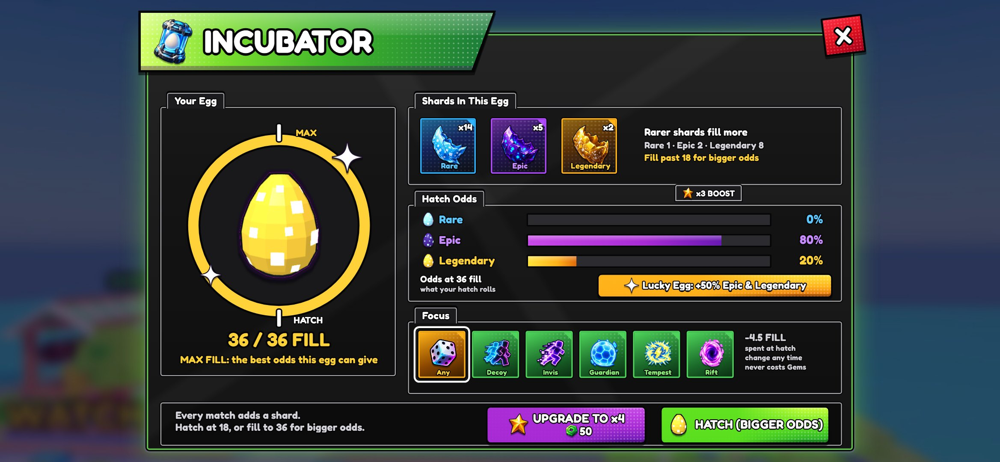
Phone size (844 x 390).
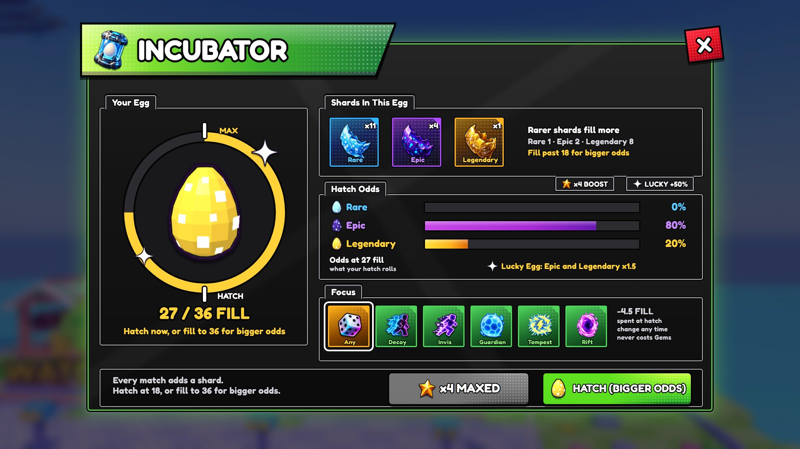
x4 bought and the Lucky Egg pass owned: x4 MAXED (greyed), x4 BOOST and LUCKY +50% tags, and the line "Lucky Egg: Epic and Legendary x1.5" where the buy strip was.
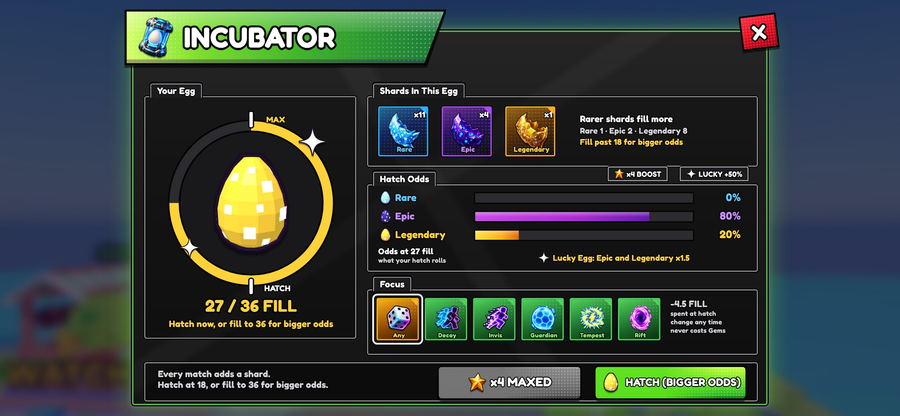
Phone size (844 x 390).
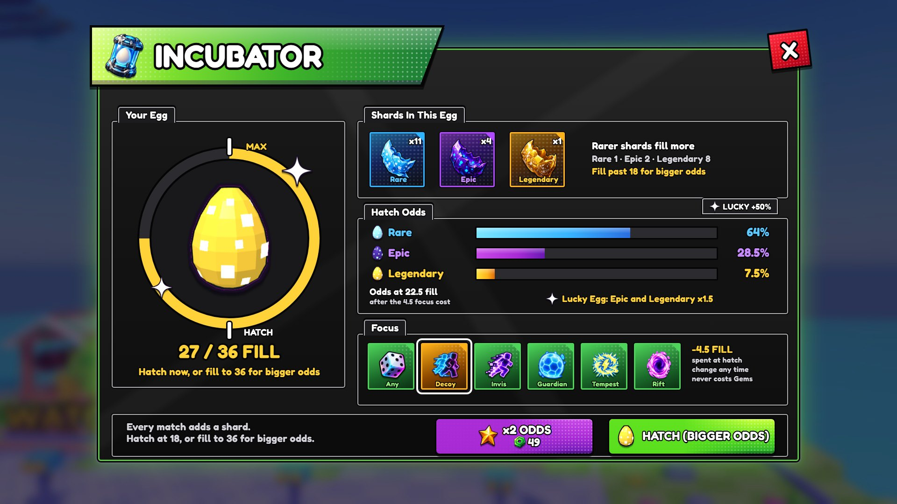
Decoy focus at 27 fill: "Odds at 22.5 fill, after the 4.5 focus cost".
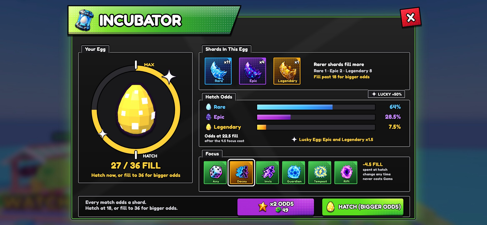
Phone size (844 x 390).
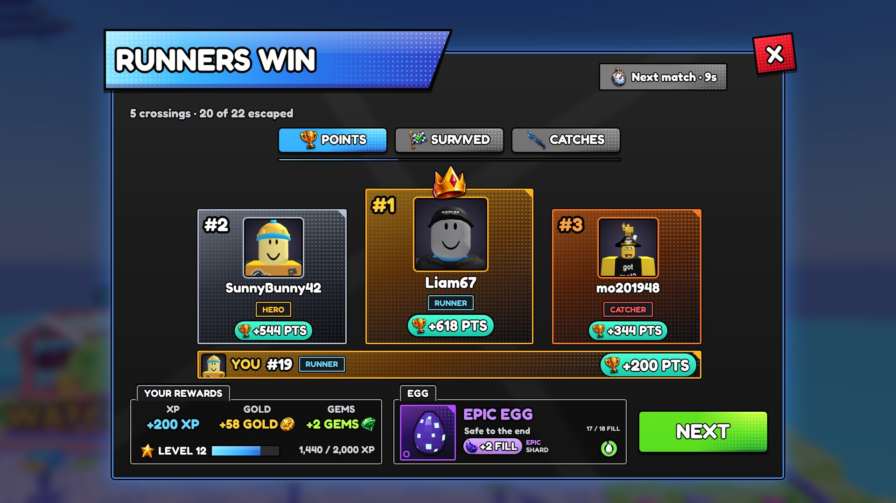
Results egg row (Results v2 layout): EPIC EGG, +2 FILL, the small egg at 17 / 18 FILL.
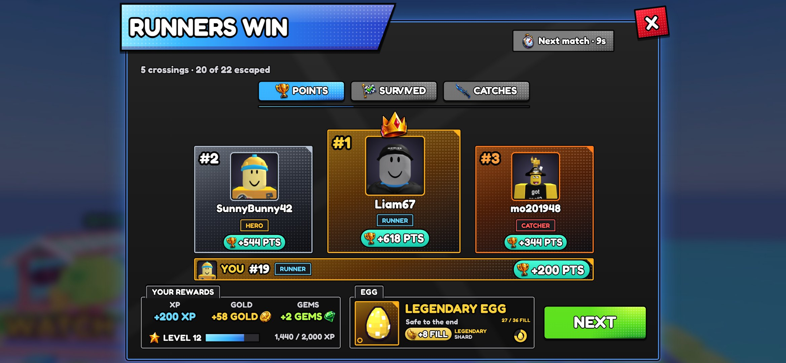
Phone: a Legendary shard (+8 FILL) past hatch. The small egg turns gold and counts toward MAX: 27 / 36 FILL.
Results card fix: the fill label sat on the card's border
Your screenshot showed "0 / 18 FILL" under the small egg, on the card's bottom border. The small egg was a copy of an old template that puts its label under the ring. Now the label sits above the ring, and both stay inside the card with padding, measured on screen so it holds at 1920 and on phones. The shard line reads "+N FILL" with the shard name small, and the counter is the egg's fill after this match's shard.
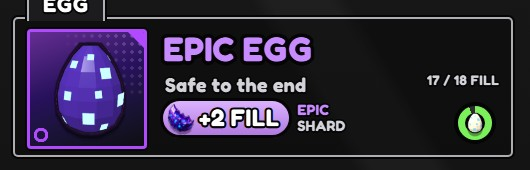
1920: EPIC EGG, +2 FILL, 17 / 18 FILL above the ring, inside the card.
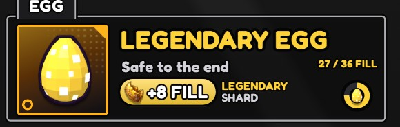
Phone: LEGENDARY EGG, +8 FILL, 27 / 36 FILL (gold once the egg can hatch).
Checked in a live playtest (17 Oct ~19:20Z)Read from the running game, not from a picture (this PC couldn't take screen captures this run): the incubator showed 12 / 36 FILL and "6 more fill to hatch" with odds 80 / 16 / 4; at 27 FILL with x2 bought it showed UPGRADE TO x3, the x2 BOOST tag, odds 44 / 44 / 12 and HATCH (BIGGER ODDS); at 36 with the Lucky pass and x3 it showed MAX FILL, LUCKY +50%, x3 BOOST and UPGRADE TO x4, with odds 0 / 80 / 20, the same as the server rolls; at x4 the button read x4 MAXED. With no product ids set, the boost button and the Lucky strip stay hidden. The results card in a real match read NO EGG THIS MATCH for a Catcher with no snatch; with an Epic shard it read EPIC EGG, +2 FILL, 17 / 18 FILL, and the pill and the small egg faded in together with the egg box. No text on the incubator spilled its box.
Three changes, drawn in the game's own UI kit with the live EggConfig numbers. The game logic for overfill and the Lucky Egg pass is already in Studio (not saved); the screens below change only after you approve them.
1. Results: "+N FILL" instead of "+1 RARE SHARD"
The shard line becomes a pill in the shard's colour that says how much it fills your egg: Common +0.5, Rare +1, Epic +2, Legendary +8. The colour, icon, word and number all come from EggConfig, so a new rarity needs no screen change. Only the shard line, the egg and the small fill counter change; the Results v2 layout is the match-points thread's, untouched.
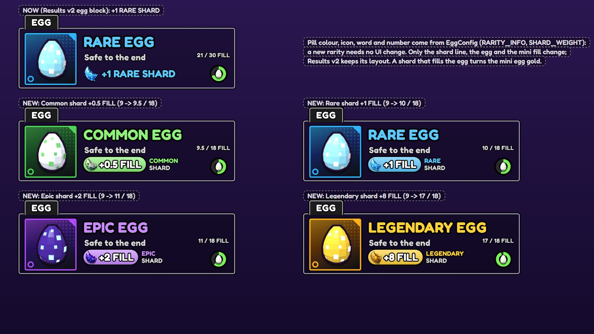
Top: today's line. Below: all four rarities. A shard that fills the egg turns the small egg gold.
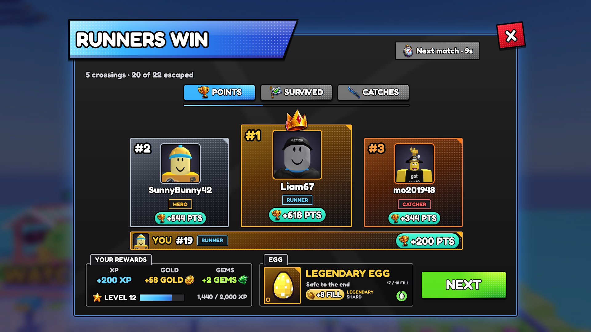
In the Results v2 screen at 1920 x 1080: LEGENDARY EGG, +8 FILL, 17 / 18 FILL.
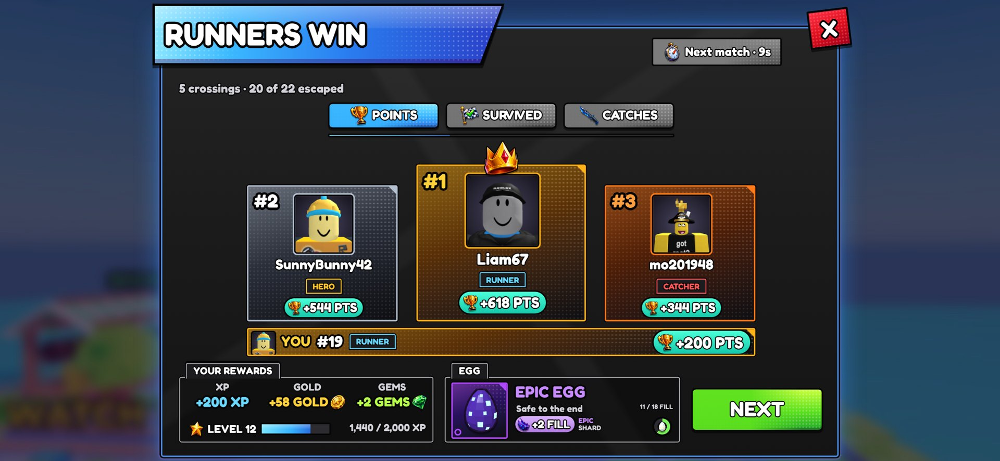
Phone size (844 x 390): the pill stays readable; the small rarity word is a bonus there.
2. Incubator: hatch at 100%, or keep filling to 200% for bigger odds
The ring runs from empty to 200%, with marks at 100%, 150% and 200%. The odds update with the fill: 80 / 16 / 4 at 100%, 72 / 22 / 6 at 150%, 64 / 28 / 8 at 200%. The button reads HATCH NOW at 100% and HATCH (BIGGER ODDS) past it. A hatch spends the whole egg. A focus costs 4.5 fill at hatch, and its odds are read after that cost.
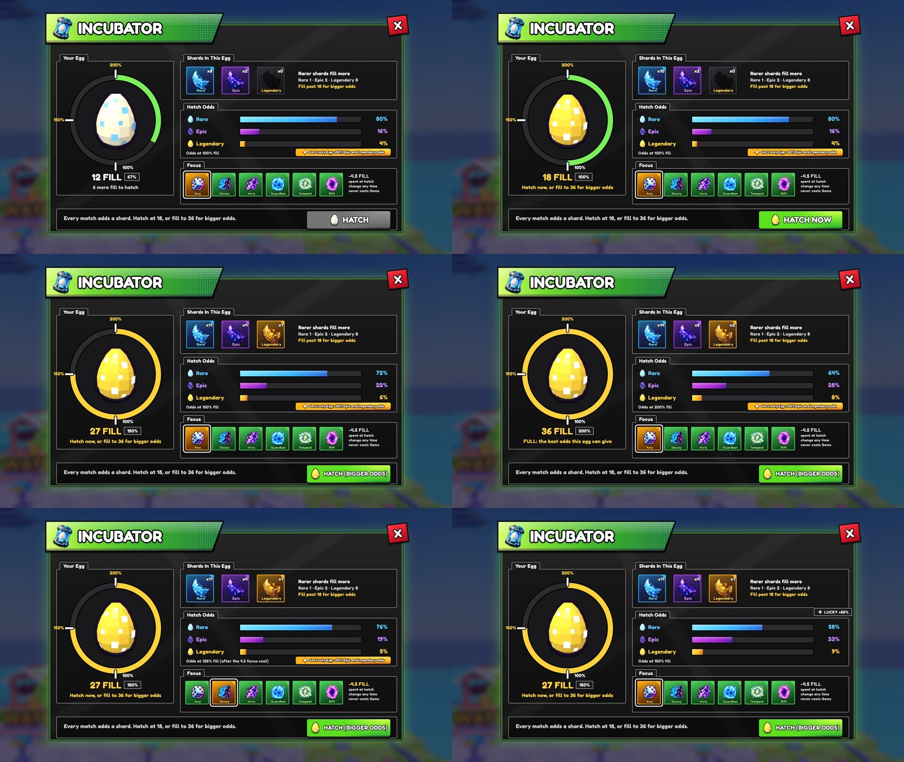
Left to right, top to bottom: still filling (12); 100% HATCH NOW; 150%; 200% (full); Decoy focus at 27 fill, read as 125%; the Lucky Egg pass owned at 150%.
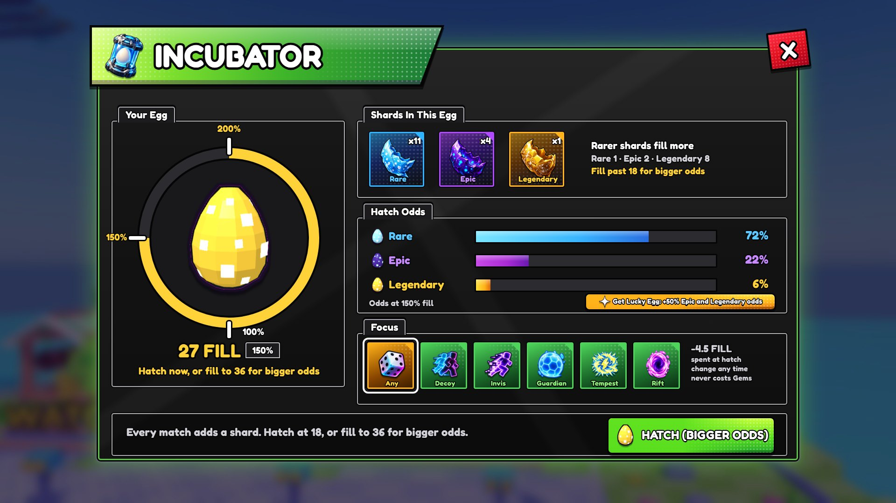
150% up close: 27 FILL, 72 / 22 / 6, the small Get Lucky Egg button under the odds, and the focus chip's "-4.5 FILL".
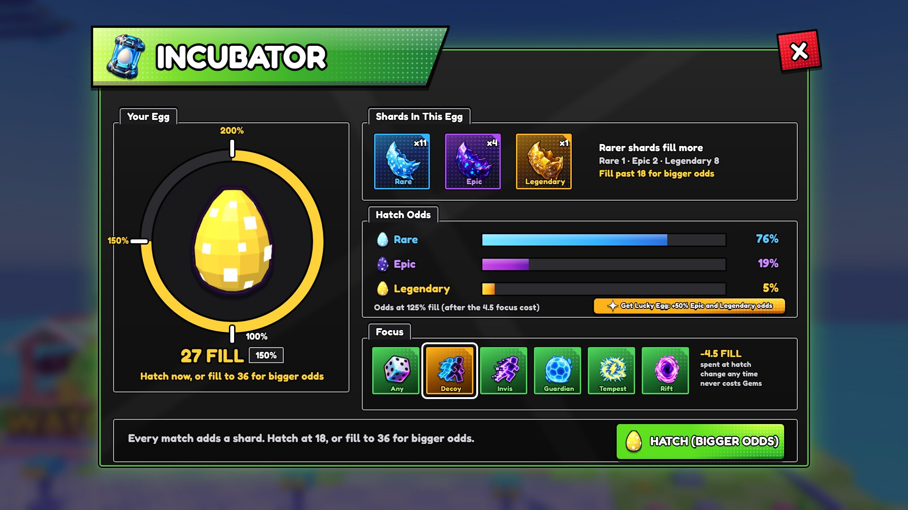
Focused on Decoy at 27 fill: the odds read at 125% after the 4.5 focus cost (76 / 19 / 5).
3. Lucky Egg pass: +50% Epic and Legendary odds
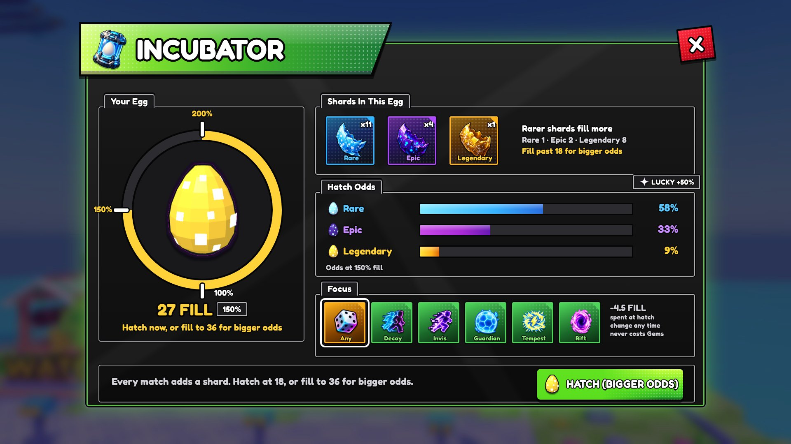
Owned: a small LUCKY +50% tag, and the odds shown are the boosted ones you actually roll (58 / 33 / 9 at 150%; 46 / 42 / 12 at 200%). Not owned: the small gold button opens the purchase prompt. The pass stays off until you create it in Creator Hub and send us its id.
Your callApprove the look of each of the three, or say what to change. Nothing on screen changes until you do.
Guaranteed upgrade · 17 Oct, ~17:50Z playtest
A full meter guarantees one step
The meter now lasts the whole match and fills toward FULL (2.0): a juke adds 0.25 (two count per crossing), a revive 0.5, and a Hero success fills it. At a safety on crossings 2 to 5, a full meter steps the egg up exactly once (Rare to Epic, or Epic to Legendary), then empties and hides for the rest of the match. Without a full meter, the egg rolls at the base chances only. These shots are from a real match, with the meter filled through the game's own juke and revive awards.
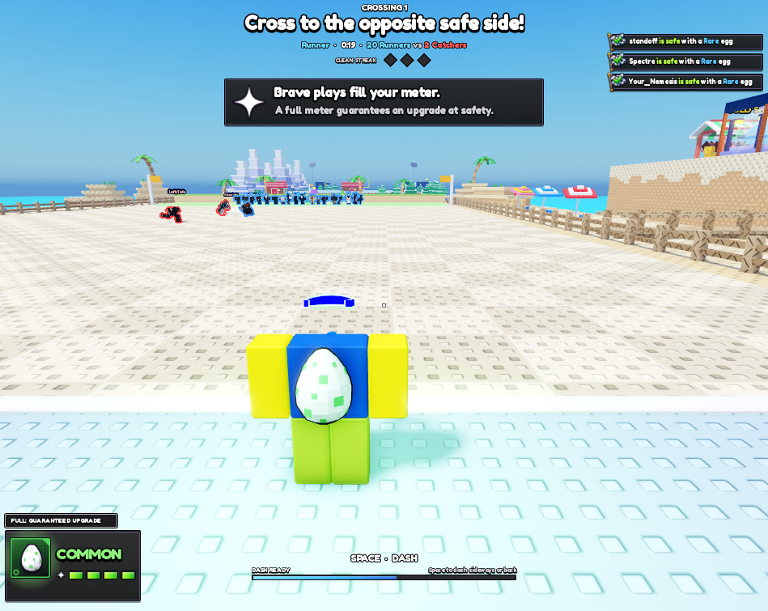
Crossing 1: the new one-time tip, and the card's tag "FULL: GUARANTEED UPGRADE" over a full meter. The tag stays readable on phones.
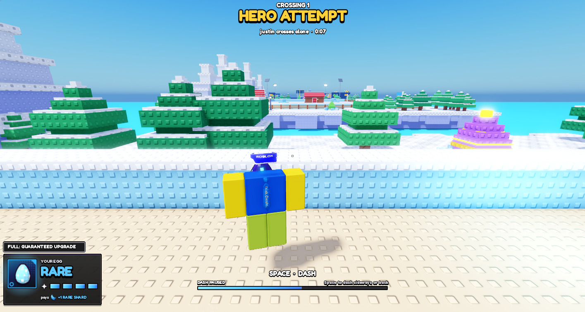
After crossing 1's Common to Rare, the meter stays full and carries into crossing 2.
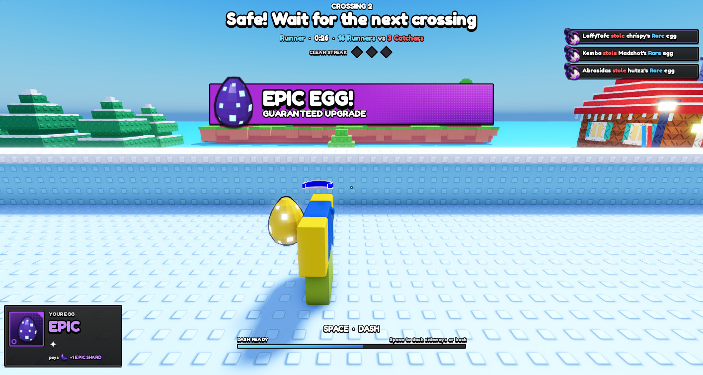
Crossing 2: Rare to Epic, guaranteed. The banner reads "GUARANTEED UPGRADE", and the meter is spent and hidden.
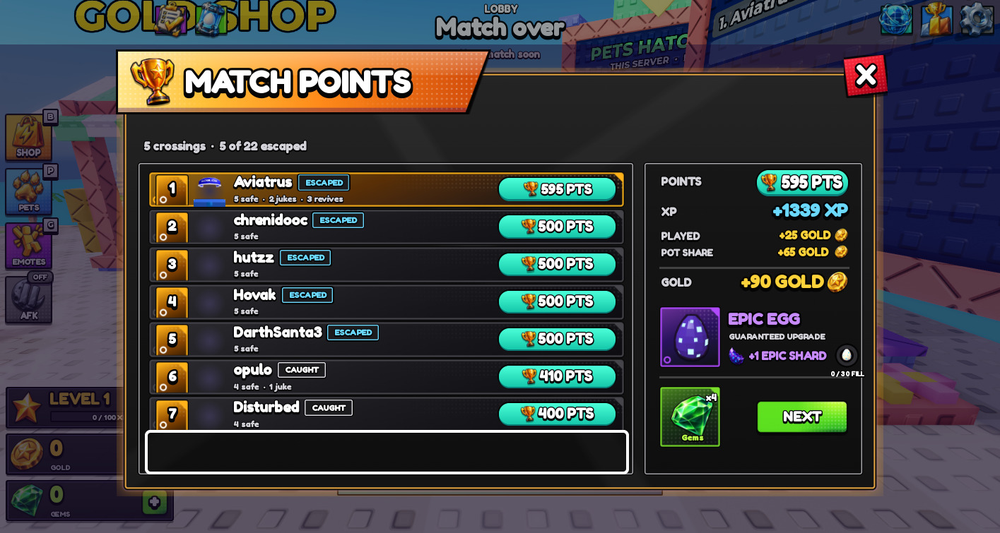
Results: EPIC EGG, "GUARANTEED UPGRADE", +1 EPIC SHARD. This line used to fall back to "Your best snatch" for survivors; that's fixed.
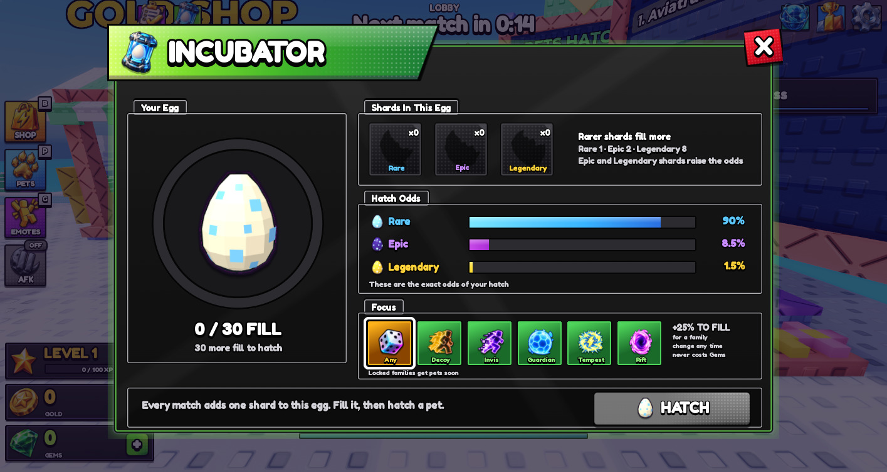
Incubator: shard weights Rare 1, Epic 2, Legendary 8. The Legendary row is now open on its own, because Legendary pets exist.
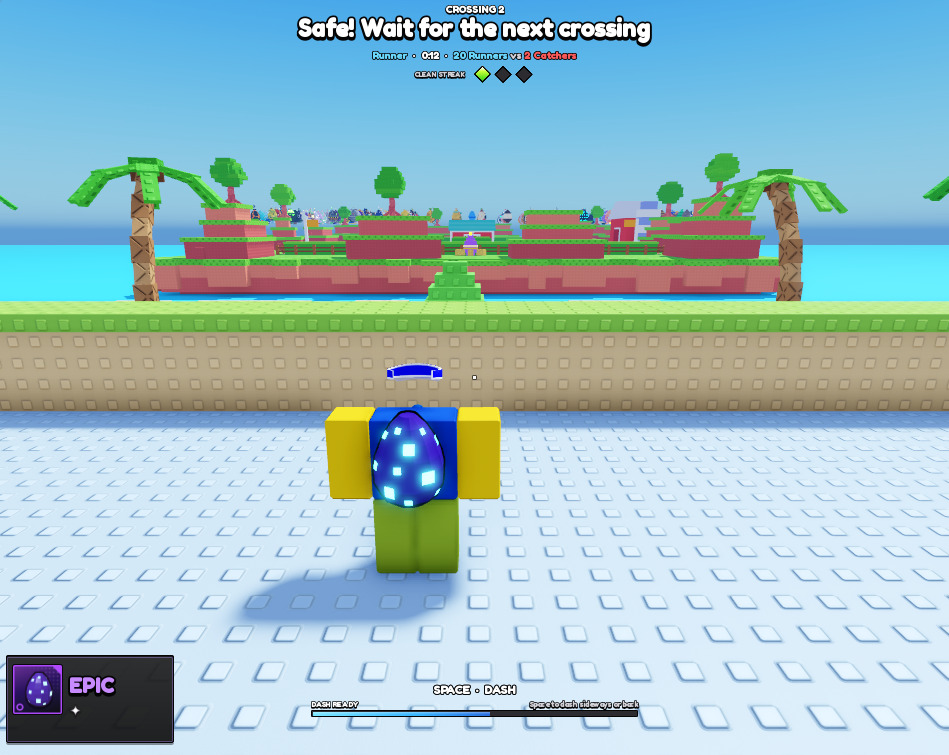
Fixed: the egg on the Runner's back now matches the card. It was showing the gold egg at Epic because the back egg still used the old ladder's levels; now Rare is the Shiny egg and Epic the purple Cosmic egg.
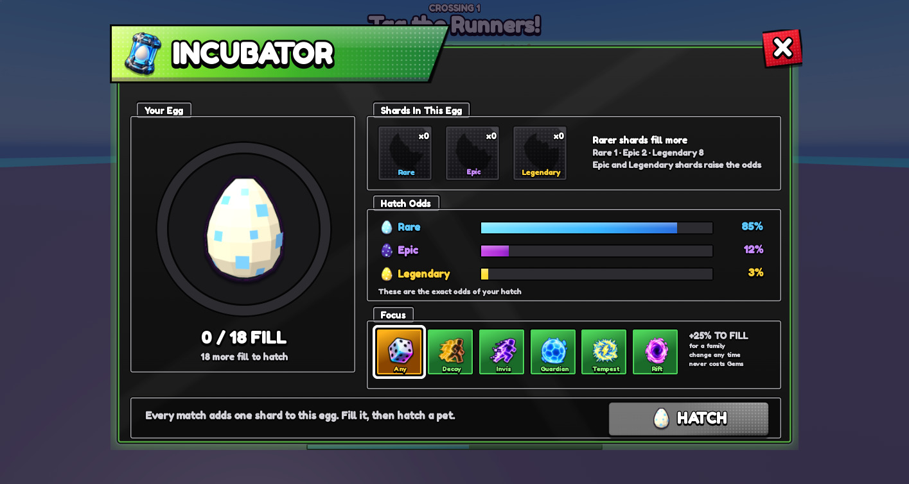
Faster pets: the egg needs 18 fill (22.5 with a focus), and the base odds are 85% / 12% / 3%. The "locked families" hint is gone now that every family has pets.
TelemetryEvery EggRolled event now carries guaranteed = true or false. This run: crossing 1 Common to Rare, guaranteed = false; crossing 2 Rare to Epic, guaranteed = true.
Full playtest · 17 Oct, stage 6
A whole match, then a focused hatch
One claimed playtest on a phone-sized screen: a full 5-crossing match, then the lobby incubator. My player got caught and finished as a Catcher, so this run also covers the "no egg" results. The egg was seeded full on the test server so the hatch could happen in one session.
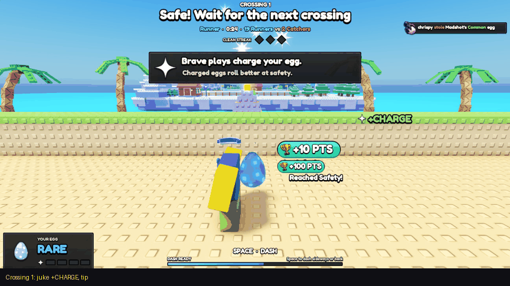
The run in six frames: a juke charges the egg; safety rolls it to RARE EGG! (its plate shows the first time now); caught, so NO EGG THIS MATCH; the incubator at 40 / 37.5 with Decoy focused; the hatch; the incubator afterwards.
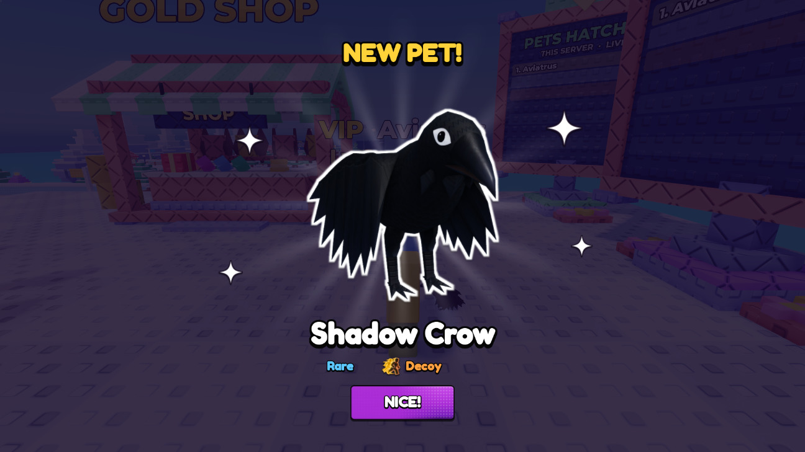
The focused hatch: a Rare Decoy pet (Shadow Crow). The server logged IncubatorHatched with focused = true and 37.5 fill used.
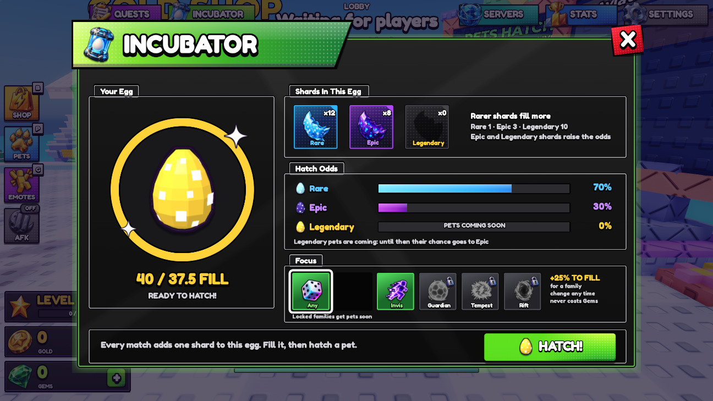
Found and fixed in this run: the selected focus chip drew black and the white ring stayed on Any.
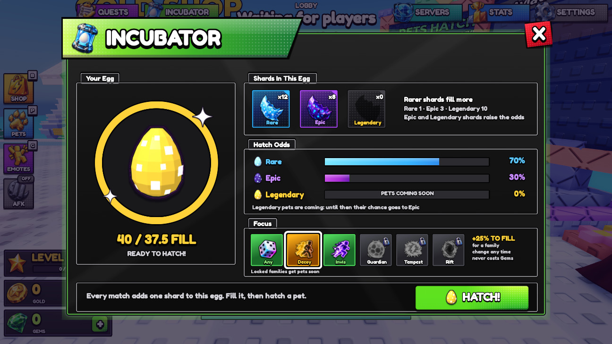
Fixed: Decoy shows as selected, with the ring around it.
TelemetryAll six event names this run sent are registered: EggRolled, EggCharged, MatchEnded, HeroChickenResult, FocusChanged, IncubatorHatched. ShardGranted was seen in the earlier runs.
Live in a real match · 17 Oct, stage 5
Charge, roll, upgrade and the shard row, in play
Phone captures (iPhone 14 landscape) from a claimed bot playtest. On phones the egg card now sits above the thumbstick and keeps only the big parts, because the small lines were unreadable at phone size.
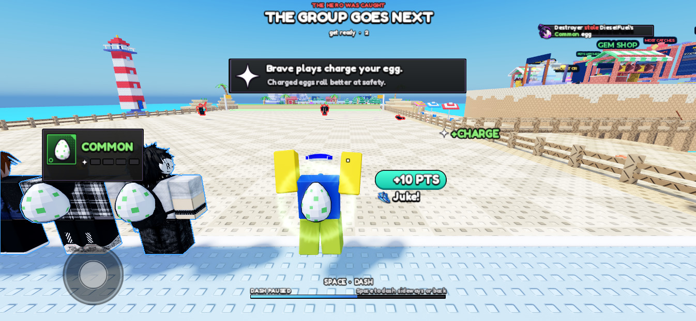
A juke: "+CHARGE" beside "+10 PTS Juke!", the one-time tip, a soft glow on the egg, the first bar filling.
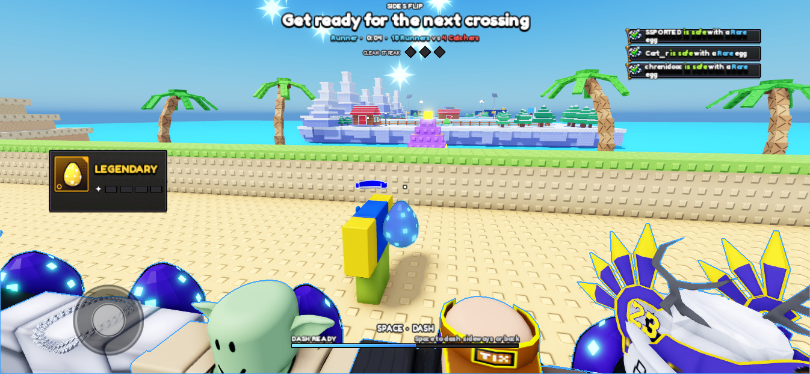
Reaching safety: the card cycles the rarity looks for about a second (caught here on Legendary); the meter has emptied.
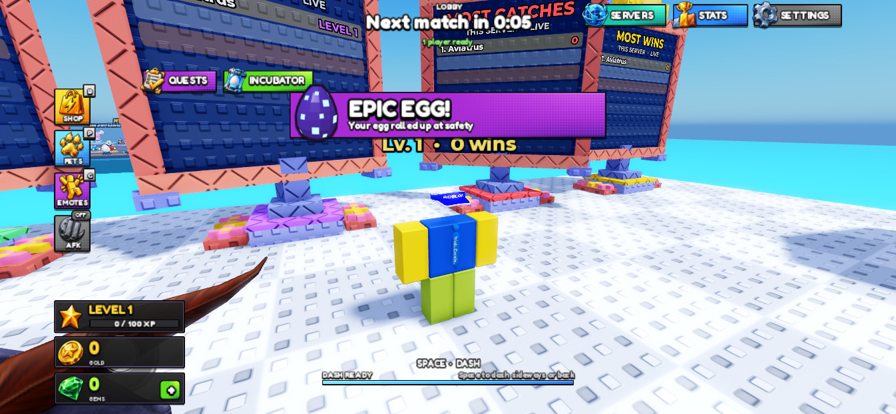
An upgrade: EPIC EGG! in place of SAFE!. The first time it showed without its purple plate (a new image's first draw is slow), so every template image is now drawn once at start.
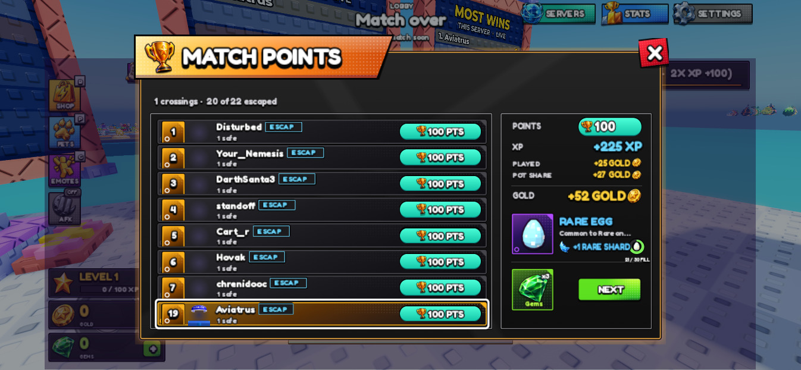
Results: RARE EGG, +1 RARE SHARD, and the small incubator egg. Its fill read the sample "21 / 30" in this run because the profile arrived before the screen was ready. That is fixed, and the ring has moved off the text.
SoundsNo new uploads: they are the game's existing licensed recordings (Pro Sound Effects): a glass clink for each charge, an airy whoosh for the roll, wind chimes for an upgrade, an egg crunch for the results crack.
In the game · 17 Oct, after your approval
Built and checked in Studio
These are real playtest captures of the imported UI, 4 charge bars, all 42 new images uploaded. Things the QA pass caught and I fixed before these stills: the fill ring drew square, "·" came out garbled, the old egg card showed through on phones, and the card stayed up in the lobby after a hatch.
Incubator at 1920 x 1080 (sample egg: 18 / 30 FILL, 9 Rare and 2 Epic shards). Odds are the server's.1366 x 768.Phone (iPhone 14 landscape).Ready: 32 / 30 FILL, HATCH! lit, 25% Epic from 6 Epic shards.Pressing Hatch: the server rolled Rare, gave a Grin Ghost, used 30 fill (2 left), and the existing ceremony played.Match card, Runner: EPIC, 2 of 4 bars (charge 0.5), +1 EPIC SHARD. Same spot as the old card.1366 x 768.Phone: it sits where the game already puts its egg card. That spot overlaps the top of the thumbstick, as the old card did.Catcher: YOUR STASH / EMPTY, snatch up to EPIC.Lobby: READY TO HATCH on the Incubator button. Since this still it sits just under the button, because at 1920 the top edge cut it off. The "NEXT HATCH 0 / 2 COMMON PIECES" goal pill here is now hidden: it counted pieces, which no longer exist.
Not seen live yetThe results "+1 EPIC SHARD" row, the +CHARGE pop, the roll flicker and the upgrade banner. This test server wouldn't start a match (another thread's test setup), so I couldn't capture them. They'll show in your next real match.
1 · HUD egg card
Rarity and charge, on the card you already have
Same plate, size and spot as the live best-egg card. The rarity diamonds become the charge meter (the name and colour already say the rarity), and the egg glows in its colour as it charges. Catchers see their stash and how high they can snatch.
Your callThe spec says 3 segments. Charge moves in steps of 0.25 (one juke), so 3 segments fill part-way. Option B (bottom right) uses 4 segments, one per juke. I recommend B.
Common to Legendary at charge 0 / 0.5 / 1, the Catcher stash, and option B.In a match: +CHARGE sits right beside the +10 PTS Juke! pop, no extra card. The tip at the top shows once, on your first charge.
2 · Roll at safety
One second on the egg, a banner only when it upgrades
Reaching safety, the egg flickers through rarity colours for about a second while you keep playing. No upgrade: the usual SAFE! line. Upgrade: the egg-grew banner in that rarity's colour, instead of SAFE!, never both. An early Runners win shows "RUNNERS WIN: BONUS ROLLS x2" with one flicker per roll.
3 · Incubator egg
One egg that fills from every match
Replaces the recipe panel. Big egg with its fill ring, the shards inside it, the exact hatch odds, the focus picker and one Hatch button. Locked families say their pets are coming; Legendary says the same until a Legendary pet exists, and its chance goes to Epic until then.
Filling: 18 / 30 FILL, Hatch greyed.Focused on Decoy: needs 37.5 (+25%). Free to change, never costs Gems.Ready: golden egg, HATCH! lit. Pressing it plays the existing ceremony (Royal Hatching if owned).Hatching: button shows HATCHING... while the ceremony starts.Later, once a Legendary pet exists: its odds turn on by themselves.First pet: after your first egg, pick a free Common from a family that has pets.
4 · Results
The shard replaces the piece
On the Match Points results card, the egg row now reads "+1 EPIC SHARD", and a small incubator egg beside it fills by that shard. The egg icon cracks and its glowing core flies to that egg (with Reduce effects on, the ring just steps up).
The four beats, every shard row, and the "no egg this match" line.
5 · Lobby, phone, beside the live HUD
Checks
READY TO HATCH on the Incubator button, only while the egg is full.Phone: the card at 1.3x.Beside the live card, and the match at 1366 x 768.
To approve
The look of every screen above (or what to change).
3 or 4 charge segments.
After approval: export, upload only the new art (needs your typed upload OK), build, then check at phone, 1920 x 1080 and 1366 x 768 in Studio.